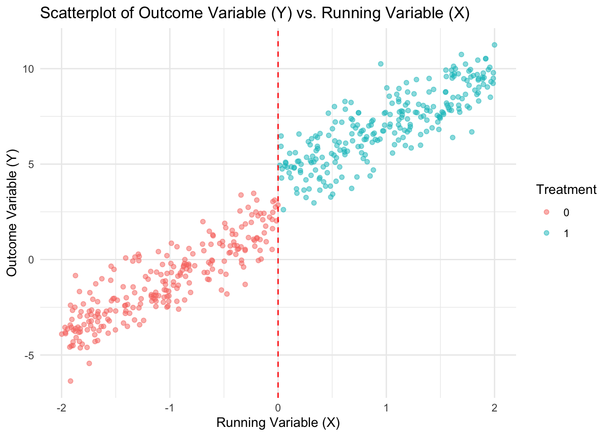
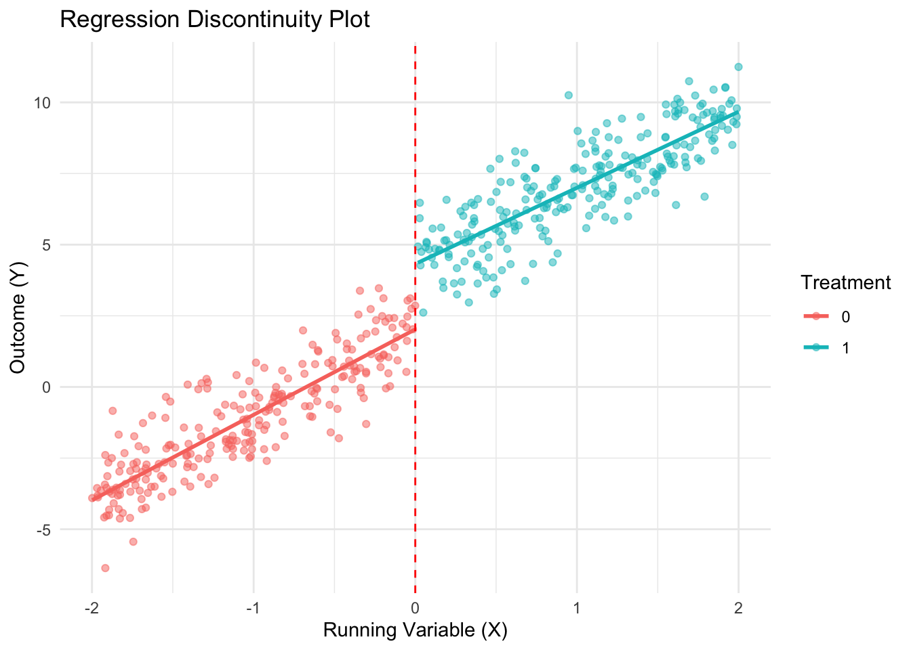
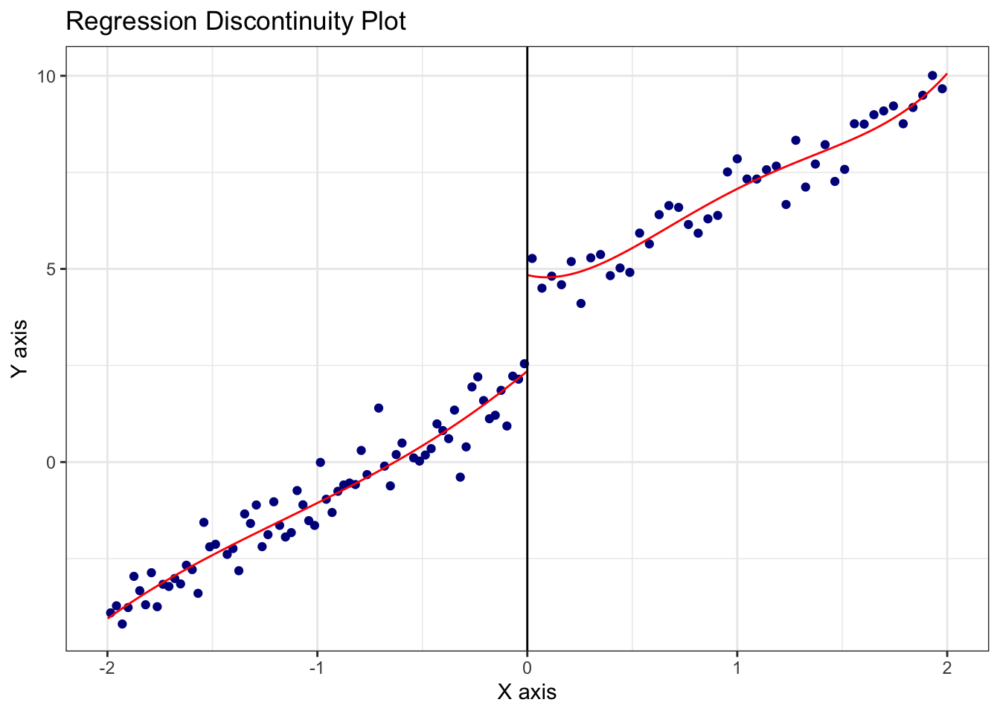
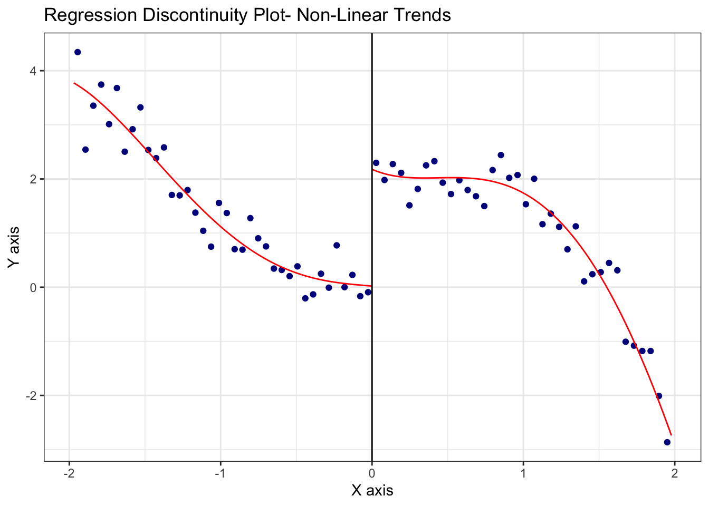
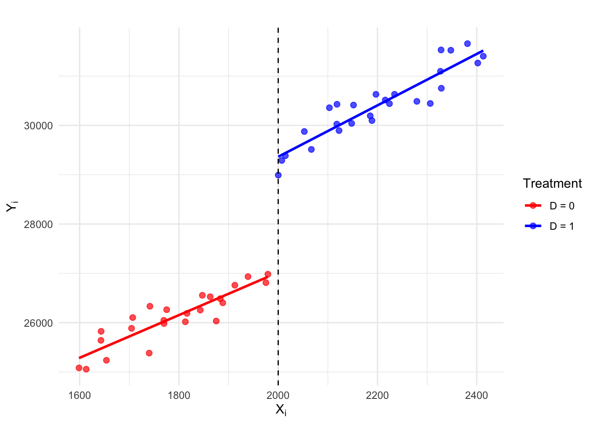

library(tidyverse)
library(rdrobust)
library(here)
library(jtools)Estimating Regression Discontinuity Designs (RDD)
A Tutorial Using Simulated Data Examples
RDD regression equation:
\(Y_i = \beta_0 + \beta_1 D_i + \beta_2 X_i + \beta_3 (D_i \cdot X_i) + \epsilon_i\)
- \(Y_i\): Outcome variable
- \(D_i\): Treatment indicator (
D=1 if X>0 , D=0 if X<0) - \(X_i\): Running or forcing variable that determines treatment assignment
- \(D_i \cdot X_i\): Interaction term that allows the slope of
Xto differ across treatment and control - \(\epsilon_i\): Error term
Load packages
Example 1
Run RDD analysis & present results using lm() & ggplot()
Simulate Example Data
# For reproducibility
set.seed(2102025)
# Number of observations
n <- 500
# Generate running variable X
X <- runif(n, -2, 2) #
# Treatment assignment: 1 if X >= 0, else 0
Treated <- ifelse(X >= 0, 1, 0)
# Generate outcome variable Y with a discontinuity at X = 0
# Discontinuity = 2 at X=0
Y <- 2 + 3*X + 2*Treated + rnorm(n, 0, 1)
# Store in a data frame
data <- data.frame(X, Treated, Y)Visualize the data
ggplot(data, aes(x = X, y = Y, color = as.factor(Treated))) +
geom_point(alpha = 0.5) +
geom_vline(xintercept = 0,
linetype = "dashed",
color = "red") +
labs(title = "Scatterplot of Outcome Variable (Y) vs. Running Variable (X)",
x = "Running Variable (X)",
y = "Outcome Variable (Y)",
color = "Treatment") +
theme_minimal()
Estimate the RDD regression using lm()
rdd_ols <- lm(Y ~ Treated +
X +
Treated*X,
data = data)
# Display summary of regression results
summ(rdd_ols)| Observations | 500 |
| Dependent variable | Y |
| Type | OLS linear regression |
| F(3,496) | 3236.21 |
| R² | 0.95 |
| Adj. R² | 0.95 |
| Est. | S.E. | t val. | p | |
|---|---|---|---|---|
| (Intercept) | 2.02 | 0.13 | 15.66 | 0.00 |
| Treated | 2.30 | 0.18 | 12.71 | 0.00 |
| X | 3.00 | 0.11 | 27.83 | 0.00 |
| Treated:X | -0.33 | 0.15 | -2.14 | 0.03 |
| Standard errors: OLS |
Create RDD plot using simple OLS approach
ggplot(data, aes(x = X, y = Y, color = as.factor(Treated))) +
geom_point(alpha = 0.5) +
geom_smooth(method = "lm", aes(group = Treated), se = FALSE) +
geom_vline(xintercept = 0, linetype = "dashed", color = "red") +
labs(title = "Regression Discontinuity Plot",
x = "Running Variable (X)", y = "Outcome (Y)",
color = "Treatment") +
theme_minimal()
Estimate & Visialize RDD using {rdrobust}
RDD Robust Estimation Method (local polynomial regression):
Local polynomial regression is a method used to estimate relationships between variables while giving more weight to observations near a specific point— in this case, the RDD threshold. Instead of fitting an ordinary linear regression, it fits separate non-linear regressions on either side of the cutoff using only data points near the cutoff.
Interpreting output:
Default estimation options used by the rdrobust() function:
- Bandwidth Optimization (
BW type: mserd): The Mean Squared Error bandwidth is optimized to balance accuracy & bias. - Bandwidth Estimate (
h = 0.461): This is the range around the cutoff (X = 0) where the model uses a subset of the data to estimate the treatment effect. - Kernel (
Triangular): Gives more weight to data points closer to the cutoff, meaning observations near (X=0) - Variance Estimation (Nearest Neighbor;
VCE method: NN): Instead of assuming equal variance across all observations, the error estimates are adjusted by considering how variability changes near the cutoff.
# Estimate RDD with a sharp cutoff at X = 0
rdd_model <- rdrobust(Y, X, c = 0)
# Print summary of results
summary(rdd_model)Sharp RD estimates using local polynomial regression.
Number of Obs. 500
BW type mserd
Kernel Triangular
VCE method NN
Number of Obs. 247 253
Eff. Number of Obs. 56 56
Order est. (p) 1 1
Order bias (q) 2 2
BW est. (h) 0.461 0.461
BW bias (b) 0.782 0.782
rho (h/b) 0.589 0.589
Unique Obs. 247 253
=============================================================================
Method Coef. Std. Err. z P>|z| [ 95% C.I. ]
=============================================================================
Conventional 2.471 0.344 7.186 0.000 [1.797 , 3.145]
Robust - - 6.309 0.000 [1.767 , 3.360]
=============================================================================Visualize the RDD discontinuity using rdplot():
This plot presents the local polynomial regression curves fit on either side of the cutoff.
rdplot(Y, X, c = 0, title = "Regression Discontinuity Plot")
ggsave(here("figures", "rd_robust_plot.png"), dpi=300, height=4, width=9, units="in")Simulate an example with non-linear trends in the treatment & control groups
# For reproducibility
set.seed(2122025)
# Number of observations
n <- 500
# Running variable
X <- runif(n, -2, 2)
# polynomial trends for control and treatment groups
Y_control <- .03 * X^4 - .2 * X^3 + .4 * X^2 - 0.5 * X + rnorm(n, 0, 1)
Y_treatment <- -.3 * X^4 - .2 * X^3 + .5 * X^2 - 0.3 * X + 2 + rnorm(n, 0, 1)
# Assign treatment based on cutoff at X = 0
Y <- ifelse(X >= 0, Y_treatment, Y_control)
# Create a data.frame
data <- data.frame(X, Y)Visualize the discontinuity using rdplot()
# Plot RDD
rdplot(Y, X, c = 0, title = "Regression Discontinuity Plot- Non-Linear Trends")
Make RDD illustration for lecture slides
Simulate data
# For reproducibility
set.seed(2102025)
# Generate running variable X
n <- 50
X <- seq(1600, 2400, length.out = n) + rnorm(n, 0, 30)
# Treatment assignment: 1 if X >= 2000, else 0
D <- as.numeric(X >= 2000)
# Generate outcome variable Y with a discontinuity at X = 2000
Y <- ifelse(D == 1, 19000 + 5*X + 500, 19000 + 4*X) + rnorm(n, 0, 300)
# Store in a data.frame
data <- data.frame(X, Y, D)Run separate regressions for control & treatment groups
# Regression for control group (X < 2000)
control_fit <- lm(Y ~ X, data = data, subset = (D == 0))
# Regression for treated group (X >= 2000)
treated_fit <- lm(Y ~ X, data = data, subset = (D == 1))Create plot
ggplot(data, aes(x = X, y = Y, color = as.factor(D))) +
geom_point(alpha = 0.7, size=2) +
geom_vline(xintercept = 2000, linetype = "dashed", color = "black") + # cutoff line
geom_smooth(method = "lm", aes(group = as.factor(D)), se = FALSE) +
scale_color_manual(values = c("red", "blue"), labels = c("D = 0", "D = 1")) +
labs(title = "",
x = expression(X[i]), y = expression(Y[i]),
color = "Treatment") +
theme_minimal()
Save plot
ggsave(here("figures", "rdd_illus_plot.png"), dpi=300, height=4, width=9, units="in")
---------
< The End >
---------
\
\
__
/o \
<= | ==
|__| /===
| \______/ =
\ ==== /
\__________/ [ab]